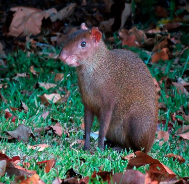
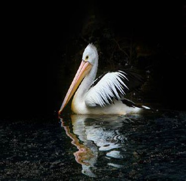

FUNDACIÓN DEL ESTADO
Provenientes del sur, del Imperio de los Itzáes entre los años 415 a 435 d.C. los mayas fundaron lo que hoy es Bacalar, con el nombre de Siyancaan Bakhalal que significa puerta del cielo y lugar de carrizos. Permanecieron ahí, cerca de 60 años efectuando numerosos recorridos y practicando la agricultura nómada; en el año de 495 abandonan Bacalar. Posteriormente fundan Tulum e Ichpatún (cerca de Chetumal), donde se observan características similares. En el año de 435 después de Cristo los si traes un darán la población de silla can bacalar primeros mayas pobladores de este territorio los primeros descubridores españoles fueron Juan Díaz de Solís y Vicente yanes Pinzón Quiénes viajaron por la parte oriental de la Península yucateca 1505 Aunque el fundador oficial fue otón pompeyo blanco Núñez de Cáceres en embargo el nombre de esta entidad es en honor a Andrés Quintana Roo político escritor poeta y periodista nacido en Mérida Yucatán una de las tradiciones y costumbres de Quintana Roo son el carnaval de conzumel también la muestras musicales de teatro de la guaranducha consumen ya la danza de la cabeza de cochino la jarana y La Alborada Maya entre otras estas son una de las más sobresalientes
ANIMALES ENDEMICOS

TORTUGA DE BARRO

VIEJO DE MONTE

PARGO DE ROJO DEL NORTE

GARZA MORENA
TEPEZCUITLE

PANTERA ONCA
PELICANOS